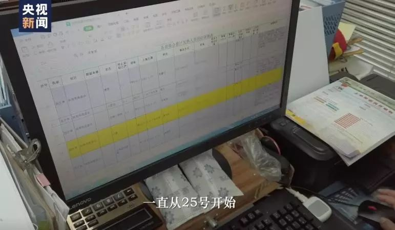
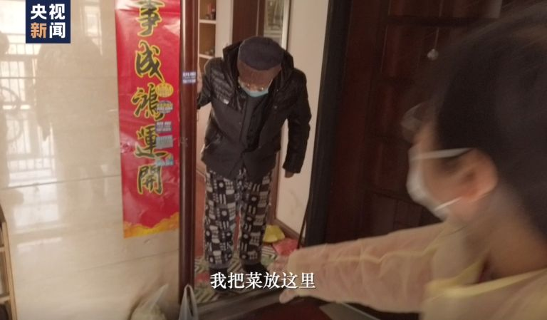
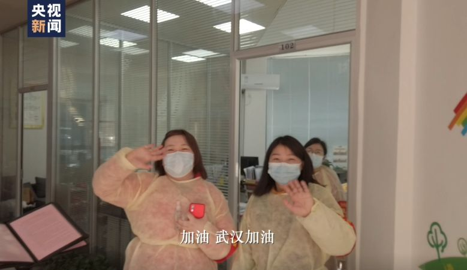

疑似感染后，两个外地护工的艰难收治
原文链接 备份链接 *************▲*************2月9日，医护人员在雷神山医院了解新冠肺炎患者病情。（新华社 高翔/图） 全文共4438字，阅读大约需要10分钟。 只要有病人，就有工作，一旦丢失了客源，也就失 …
澎湃新闻特约撰稿 张小莲 记者 任雾 实习生 蓝泽齐
这几天，江强（化名）明显感到工作进入“快车道”了。
居委会陆续来了增援的人，“应收尽收”的“死命令”下来，送病人做核酸检测、收治隔离，前些天最挠头的这些事，也畅通多了。还有一些新增的疑似病人，但明显比之前少了，昨天（11日）新增了两个，一个已经做了核酸，另一个今天安排做核酸。
江强是武汉“百步亭”社区某居委会的工作人员。“百步亭”也许是疫情中最受关注的社区了：曾因举办“万家宴”受到争议，近日又因某个居委会公布发热病人的门栋信息，和一则居民密集排队的视频在网上流传，再次引起关注。

疫情爆发以来，武汉市以居委会为单位，开始承担起组织社区居民共同抗击疫情的任务。来源：央视新闻
这些争议，对江强来说，有“提示过风险但未被采用”的无奈；有被放大的传言；还有理解的错位。
居委会在相关门栋楼下贴了“发热门栋”四个字，但没有公布具体哪一户人，江强认为这是为了保护居民隐私权，“比较人性化”。但居民们并不“买账”，要求公开病例信息。
疫情爆发后，面对繁杂的防疫工作、居民的抱怨和质疑，以及被感染的风险，江强和他的同事们“有太多想要崩溃的瞬间”。有人辞职了，江强还在坚持。
社区的居民都是抬头不见低头见的街坊，不是亲人，也像一家人。江强理解，因为这个病，大家都慌了，“这个时候你不管他们，不去跟他们解释，不挨两句骂，他们没有渠道（发泄），会更加恐慌。”
有一次，一个居民对他说了声“谢谢”，整个居委会都沸腾了。他们说不容易啊，“碰到个好人。”江强说，好人吗？是病人。“她和儿子双肺‘玻璃状’，除了安慰，等排队，我无能为力。”
如今，这种“无力”缓解了不少：方舱医院和隔离点建成后，陆续收治病人，核酸检测也在加快，治愈的人越来越多，也会空出新的床位来。
“感染人数慢慢减少，居民的心会慢慢平静，我们的工作也会越来越好做，要多一点信心吧。“江强说。
以下是他的口述
百步亭社区大约住了15万-18万人，大多是本地居民，老人小孩为主。设有一个社区管委会和下面9个居委会，一般一个居委会管一个小区，有的管两三个小区，一个小区30多栋、50多栋的都有。我所在居委会的在编工作人员有21名，负责四个小区的3000多户、10000多人。
1月初，我们听说了肺炎的消息，但起初说“可防可控”，后来又说“不排除有限人传人”（注：1月15日，武汉市卫健委在官网发布的疫情知识问答中，首次提到），万家宴举办前三天（1月15日），我们跟居委会领导反映，最好取消万家宴，但没成功。
当时我们有点担心这个“肺炎”，是不是跟甲流一样会传染，因为武汉（2019年）12月份流行甲流，很多学校停课，学生在家隔离，我们以为跟甲流差不多，没想到会死人。
疫情爆发后，到处都在传那张万家宴的头版头条，拿出来讽刺我们，我们也很无奈。
万家宴办了二十年，其实并非指有万人到场，而是指万户家庭提供的菜色。一般主会场坐席三四百人，参观几百人，会场外有庙会，场面也不大，人流量几百，龙灯龙船表演时可达到上千人。每个分会场十几张桌子，流水席，来来去去三四百人顶天了，九个分会场最多几千人流量吧。
因为万家宴、庙会等各类活，我们已经半个多月没有休息一天了，就指望着春节休息一下，然后就没有然后了。
1月23号（武汉“封城”）开始“8对8”，每天早上8点上班，晚上8点下班，直到现在没有一天休息。其他社区都是一个班四五个人，一个社区分2-3个班，上一天可以休1-2天。但（管委会要求百步亭防疫工作）必须要跟其他社区不一样。
“一二三四五六七件事情”
现在我们每天的工作内容有好几项。
首先是排查，每天早上8点开始，把前一天统计的名单拿出来，每一个发热的、疑似的、确诊的、住院的，全部联系一遍，看看有没有变化，上门的上门，电话的电话，重新再过一遍。然后还要去接医院派下来的名单，这个名单就是有些人没跟我们报备，他们自己跑去医院，我们要重新摸排，如果确定是的话，就做到新增名单里。还有就是居民每天电话来报备的，全部要做成新增，单独做一个表格，到底是属于轻症，还是发烧咳嗽，还是做了CT的疑似，还是做了核酸检测的确诊，全部要过一遍。这是最重要的工作，我们分了5个网格，每个网格有2个人专门做这个事情。
其次，给行动不便的、独居的高龄老人和残疾人送菜。我们每个网格（针对这部分特殊居民）都有一个表。每回来了菜，我们就装成一袋一袋送上去。很多人不满意啊，说怎么不给他们送。菜是上面发下来，大箱子上面写着支援灾区，毕竟数量有限，只有困难人群才有，一家人两斤菜再加两萝卜。有次我给一户独居的残疾居民送菜，他说怎么只有这么点，我说还有口罩和消毒水，他说怎么不多搞一点，我说你是人家的好几倍了，人家就只有一点菜。
网上流传的那个排队领菜的视频发生地，是我们百步亭社区购物首选的大超市，但它属于丹水池街道管辖，不归我们管，我们去问了一下，不是免费发菜，好像是排队买肉。
其三，每天有急事要出行的，我们要安排车辆。我这个网格有3个尿毒症患者，要送他们去医院做透析，还有糖尿病高血压患者要领药的，送他们去领药等等，很多是困难群体。
其四，各方的捐赠物资陆续运来，不通过红十字会，直接对口社区，让我们开车去高速路口接，开好多证明。现在不用去高速路口了，这些志愿者很厉害，直接送到社区来。

2月9日，武汉百步亭社区，一位志愿者司机让一位自行来到发车点的轻症新冠肺炎患者上车后，等待同事告知他目的地。这位患者将被送到市内一处方舱医院接受隔离治疗。中青报·中青网记者 李峥苨/摄
其五，物业每天都在消杀，我们对接物业和防疫站，认为有必要的楼栋，我们还要防疫站的专业人员再杀一遍，那些去世的、疑似的、确诊的家庭，要去杀毒。去世家庭的消杀，防疫站、社区医院、居委会三方都要到位，我对接好几次了。
有一次，另一个网格的居民因新冠肺炎去世，我代替那个网格的女同志过去了，完了之后我们接到投诉，市长热线的问责，说我们没有消杀。当我们拿出所有证据、来来回回搞了几个小时之后，他承认了，他说当时是他一个亲戚在家，没有沟通好，我说你亲戚在家（也不能）投诉我三次啊。总之，经常遇到各种“稀奇古怪”的事情。
其六，给需要住院的确诊和疑似病例安排床位，要排队；把确诊和疑似病例送往隔离点，也要排队。住院是一条线，隔离点是一条线，你排到哪个算哪个。
有个社区志愿者的老伴排队排了三四天，没排到床位，排到了隔离点。他一直在抱怨，费了九牛二虎之力终于把他送走了，没有一句表扬，还一肚子委屈。
送去之后，打电话来说他没带手机，让我们去他家拿一下手机。没消毒，没办法，去呗。用个袋子装着，拿回来消毒。他要我们第一时间送去，我说你现在主要是治病，我们现在人力物力都很紧张，明天有社区干部要去隔离点，再给你带过去。好不容易说通了。过一会儿又打电话来，说还要拿充电器。我说你家里还有一个人，能不能送到社区来？不行。这是第二趟。第三次打电话，让我们去他姐姐家里送个口罩，顺便拿个什么东西。他姐姐住另一个网格，八十多岁了。好，也是我去。第四次，家里的水电气能不能帮我关一下？我让物业去，帮他把外面的闸全都关了。
事情还没完。我下班以后，听同事说，他又打电话来了，问能不能再把煤气打开，说不在乎那几个钱。当时都晚上九点了。同事说现在都下班了，能不能明天再去。他就不依了，开始骂人了，单位副书记把电话抢过来给他做工作，解释了半天。
我就问一下，你儿子能不能做到这个地步？你得了病我能理解，我们也不需要你理解我们，但是请不要太过分。他老伴是志愿者，我们跟她很熟，他家里还有一个更老的老人，尿失禁，我们每个月都给他家送一箱尿不湿。我真的没想到，这个家庭会对我们发飙。我好难过。
最后，剩下的人就是接电话挨骂。这两天很多人都在家关“疯”了，一点小事就闹，我们也“疯”了，给他们解释各类政策、各种事情。我两部手机，一个是工作的，一个是私人的，上班12个小时，12小时（电话）没停过，戴着口罩，（时间长了）受不了，换个人接。我今天（2月4日）把手机都摔了。回家之后吃了个饭，换了部手机，又一直忙到晚上11点多。
为什么摔手机？不是因为具体某一件事情，是一二三四五六七八各种事情，两部电话都接不过来的事情。被居民吵完之后肯定不舒服啊，但是再来一个电话你还得接。
“排队，排队”
一千万人的城市关起来，历史上都没发生过。大家都没有经验，摸着石头过河。
很多事情都要靠基层做。老百姓去看病，必须社区开证明。所有车子不能出去，必须社区开证明，但没有文件明确，社区该开哪些证明，不该开哪些证明。
我碰到几个，他家里人要去上班，要给他开证明，就在这儿发飙，我说你让我怎么开，内容怎么写，什么抬头，对应哪个单位，根据哪条法律法规，一切都是空白。
比较挠头的还是病人的问题。病人必须到社区医院去验血，验了血，社区医院让你去看发热门诊，才能去看。到发热门诊怎么去？公告写的很清楚，由各区组织专门车辆。但这个“专门车辆”找谁？
经常碰见这样的情况。居民走三四个小时到医院，医院说人太多，看不了，找社区。他又拿着社区医院的证明去排队。排了八个小时，才能照CT。拿到CT结果，然后告诉你，等试剂盒。然后又走三四个小时回来。
这是早期的情况。大概1月30号晚上，我们改装了公安局的车辆来接送病人。但（医疗）压力太大，人太多。
2月4日，我送了十个人去隔离点，做核酸测试，做完再送回来，因为隔离点早就没有床位了。

针对新型冠状病毒感染的肺炎患者及疑似病例的心理疏导、患者家属的后勤服务，也是百步亭社区的重要工作。来源：央视新闻
（截止2月4日）我们居委会没送走的病例有42个左右，大部分没有确诊，也有做了核酸测试结果显示阴性的。已经住院的、隔离的、死亡的都不在这个名单里。通过我们送去隔离的有7个，死亡3个，死亡的都是没确诊的。通过我们送去住院3个，没有通过我们住院的，我了解到的有5个。可能还有一些我们还没掌握到，隐瞒不报、在家扛的人也有。病得不行了，才打电话过来说发烧多少天了。我说你前两天怎么不说呢，他说他怕不是这个病，去了医院被感染了怎么办。
在10号令（编注：2月2日）发布前两天，我们就开始送隔离点了。第一天送了三个人，那个酒店离社区不远，第二天我要打电话问情况，上午打不通，下午电话通了，他们反映说昨晚闹了一晚上，没有医务人员，没有量体温，没有开空调，被子是一层薄薄的纱，三个人发烧了一晚上，第二天家属给他们送衣服被子。
第二天送了一个，因为这个名额也是报上去排队，先报先送。第三天就开始分类了，轻症的不送，已确诊的重症不能送，疑似的另外送。
以前都是八仙过海各显神通啊，自己去医院，自己去做CT，自己去做核酸测试。我们这有个87岁的老人，运气好得不得了，1月29号协和医院给他做了CT，然后就做了核酸，31号确诊。那个申请报告我也看了，“在我处做的核酸检测为双阳性，请到指定的社区由社区安排就医。”我也碰到过单阳性的，双阳性更厉害一点，就在社区排队了，排了4天才排到床位。
有些没排到床位的就一直在抱怨。但我们也没办法，只能把他的病情状况上报，卫健委觉得可以住院才会转给区，区指挥部转给街道，然后才到我们社区，我们才会通知你去住院，用专车送你走。这是一个程序。
社区只能上报，上报之后排队。现在，一个居委会每天能分到一个床位都难。我们副书记每天到处去求人，去吵架，来争取名额。有个病人安排了四天，她自己去找关系，向街道施压，才抢到一个床位，安排住院了。只过了短短几分钟就收到消息，另一个在排队的病人死在家里了。副书记当时就崩溃了。凌晨两点多还在拷问自己，是不是我们把他上报得很严重，就会让他住院？是不是没有做到最好？
“理解、坚持和信心”
封城那天，我们接到紧急通知，一天之内要把3000多户全部走访一遍，家里有人的，发疫情告知书，没人的，就贴在门口。每一栋都有楼长跟我们保持联系，发现哪家有咳嗽，我们就要上门去问，做登记。
大年初三之前，我们都是自备口罩。初三，管委会下发了一批口罩，我们也给居民分发了一些口罩，主要给发热家庭，一人2个，后面捐赠的口罩大量地来，我们可以大量地发给居民，一人5个。
初五，防护服、护目镜也发下来了。防护服是一次性的，我们每天都要穿，一套穿几天。晚上回来，脱下防护服挂在家门口，用消毒水喷，在外面晾一晚上，第二天早上再穿。
到了初五初六，人数越来越多，我们就没有主动出击了，虽然配了防护服和护目镜，还是很怕。只能等居民给我们打电话报备。还有些人不报备，去往各个医院，我们会得到各个医院的反馈情况。针对发热居民，我们每天打两次电话，再往上汇总。
不可能再挨家挨户去敲门了。我们已经倒下两个了，发烧咳嗽的。请假的两个，一个是亲人已经查出双肺感染，另一个她老公是志愿者，也在做贡献，家里还有两个小孩，她实在顾不过来了。
还有两个辞职的。那天我记得很清楚，我在警务室那里找到她们，我说你们网格X栋X单元的某户要上门咯，要送一些菜、口罩和消毒水，我看你们没去拿，以为你们不知道，特地给你们拿过来，你们赶紧去。我话一说完，就看见她们都在擦眼泪。我还加了一句很蠢的话，我说这个是发热病人，领导指定要去的。一说发热就不行了，这个说头疼，那个说胸口疼。
其实每天往自己身上喷消毒水，戴着口罩说话说一整天，谁不头疼？加上精神高度紧张，每天干这干那，又要去那些危险的地方，晚上还睡不好，早上8点又要来。你说谁受得了？
没办法，我们居委会就两个男的，我说我去吧，你们别哭，这么多天都挺过来了。
现在我们就剩下15个人。我一点都不怪她们（辞职），都是有家有口的，这么多天真的是不容易。我们还有位怀孕四个月的同事一直撑着，我跟她说你要是辞职我们真的欢迎。
很多居民每天都碰到他们，大家点头都认识，经常搞活动做志愿者，我们不是亲人，但也像是一家人。因为这个病，大家都慌了。如果这个时候你不管他们，不去跟他们解释，不挨两句骂，他们没有渠道（发泄），会更加恐慌。
那天有个居民说：“你给我联系了几天都不能住院不能检测，我知道要排队，不怪你，我就是要人安慰一下，我好怕……”我听到这里都要哭了，最后她说谢谢你，说了好多次。我说，今天你是第一个谢我的人。全居委会知道后都沸腾了，他们说不容易啊，你碰到个好人。好人吗？是病人。她和儿子双肺玻璃状，除了安慰，等排队，我无能为力。

社区每天都要义务给感染新冠老人送去新鲜蔬菜，并关注老人的健康状况。（图文无关）来源：央视新闻
说实话，我早就有过不想干的时候。我在这里干了八年，目前留下来的也基本都是老员工，大家互相打气，他们还在坚持，我也就再坚持一下。我不是党员，没有那么高的觉悟，就是同事、朋友之间很长时间的感情在里面。如果我不干了，难道让女同志去冲吗？她们已经冲了，那我再不干了，她们怎么办？她们会更辛苦。
那天在小孩家长群里遇到一个协和的护士，我还跟她说，我们都是逆行者。她单独私聊我说：“我考取了心理医生的牌照，你如果有任何需要的话，请联系我。”但我没时间跟她聊，我说我有需要就联系你，她说不客气。我想大家应该都需要（心理援助），就跟同事说了，他们居然没反应，我想象中的回答没有出现，出现的是一片沉默。
刚开始我们没有口罩，每天晚上回来我们还到处讨论。后面物资越来越丰富，防护越来越多，但是人越来越沉闷，太累了，不想说话。
也有很多理解我们的居民。有人在群里说，你们别逼他们了，他们也很不容易，说我们是“拿着卖白菜的钱，操着卖白粉的心”。还有个长辈给我发了好长一段话，看了真的很感动。
2月4日，区里下通知，说领导已经开会了，密切接触者是下一步的工作。1对6，1个病患至少要报6个密切接触者，疑似的也要1对6，这个数量太大了。
现在的问题是隔离点没有医生，国家在不停地增援，我相信过几天就会好起来。陆续把这些病例都集中起来，把这些密切接触者都隔离起来，然后火神山、雷神山、方舱医院慢慢地收治，各个医院一些人慢慢地痊愈，也会空出一些床位出来。
全部隔离起来，感染人数就会慢慢减少。居民的心也会慢慢平静，我们的工作也会越来越好做，要多一点信心。
“进入快车道了”
2月7日，我们接到通知要24小时战备，白天分成两班，一个是早上8:00到下午2:30，一个是下午2:00到晚上8:00，中间半小时交接，晚上主要是居委会书记、副书记和副主任3个领导值班。
这几天我们又有两个人请假。但有个好消息是公务员下沉到居委会工作。这些天陆续有增援，截至2月12日，我们居委会有十来个公务员，每天来报到，给他们安排事情做。
2月8日，区指挥部要求核酸检测全部停止。第二天又下了死命令，要求当天把所有疑似病人送去检测核酸，我们通知那十几个人24小时准备，随时打电话就要走。
我们和病人从早上8点一直等到晚上12点多，后来送了4个去做核酸再送回来，又送了4个直接去住院，送完最后一个都凌晨两点多了。
2月10日，送了10个疑似病人去隔离点，现在隔离点也可以做核酸，还要送3个确诊的病人去住院。
其中有个人，之前送她去做核酸检测，做完了送她回来就是不下车，非要送到医院，死活不肯下来。最后没办法，把她送到医院让她去排队，然后掉头回来接剩下的人去做核酸。耽误了两个小时，其他的人在风雨中冻得瑟瑟发抖。
她确诊为阳性，我们上门做了三天工作，劝她去隔离，她不去，让她去住院，她也不去。10号那天，派出所民警、纪委督办的人都上门劝她，她没戴口罩，在那“声嘶力竭”地叫喊。
她刚开始喊的时候，我就把民警肩膀上的执法记录仪拿下来，退到两米远，拍了全景，那简直口沫横飞啊。民警距离她一米远，很克制地劝她安静，劝她戴口罩，她就是不戴。
她说隔离点没有家里好，方舱医院会交叉感染，去医院也不行，她说已经好了，都不发烧了，她说什么人家去医院几天就死了，“去医院就是要死”。
其实按照传染病防治法，她这样是违法的。我们好话说尽，说给你安排最好的酒店，也不行。最后已经到什么（程度）了，给你提供火神山（的床位），最好的医院啊。她说跟家人商量一下，商量到最后又不去。晚上12点多，我们终于把她送到酒店去了。
剩下还有一些新增的疑似病人，但明显比之前少了，昨天（11日）新增了两个，一个已经做了核酸，另一个今天安排做核酸。现在新增的基本上都是密切接触者，主要是家属。我们下一步工作主要就是密切接触者的排查。
这两天明显感觉到，好像一下子进入快车道了，情况都在好转。

百步亭社区工作人员说，疫情爆发以来，社区工作工作量庞大且繁杂，居委会内的工作人员从1月23日以来都没有休息过。（图文无关）来源：央视新闻
戳这里进入
“全国新型冠状病毒感染病例实时地图”↓↓↓

本期编辑 周玉华
推荐阅读


原文链接 备份链接 *************▲*************2月9日，医护人员在雷神山医院了解新冠肺炎患者病情。（新华社 高翔/图） 全文共4438字，阅读大约需要10分钟。 只要有病人，就有工作，一旦丢失了客源，也就失 …
原文链接 备份链接 经济观察网 记者 高歌 在过去的24小时里，陈赟经历了从社区隔离点拉去方舱医院，又因血氧量低不予接收，原路而返的周折。 “我的东西都被踩烂了，被子都丢了，没有力气搬了，”今年55岁的武汉市民陈赟核酸检测结果为阳性，2 …
原文链接 备份链接 【财新网】（记者 丁捷 实习记者 何京蔚）举办大规模的“万家宴”的武汉百步亭社区再受关注。2月10日，多名该社区居民向财新记者反映，疫情升级后，社区至今未公示确诊病例和疑似病例人数，信息披露不透明。此外，消毒、排查等 …
原文链接 备份链接 2 月 9 日下午，在被方舱医院「退回」4 天后，刘俊一家被街道居委会通知，当日会安排车辆送其父母入院治疗。 在此之前，经历了数日的网络求助，刘俊一度感到入院无望，特别是在父亲退烧后，几乎接受了无法入院治疗的事实。对于 …
原文链接 备份链接 _ 送物资魔幻现实主义的一天 _ 作者：Haylin 坐标：武汉积玉桥 职业：自由职业戏剧人 自从进了8方公益志愿者小组，我从信息部跳到外联部跳到规划部。我们规划部就是专门联系金主爸爸和物资爸爸的。 之前联系到了一家生 …